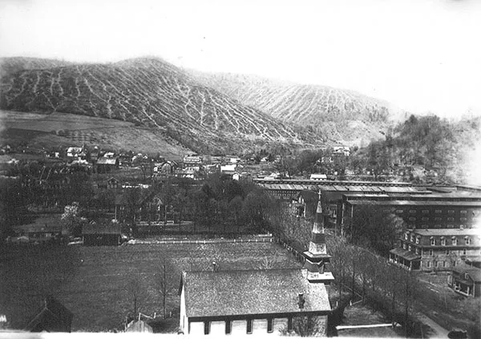
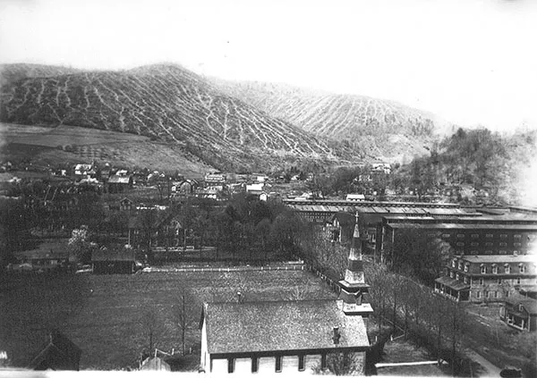
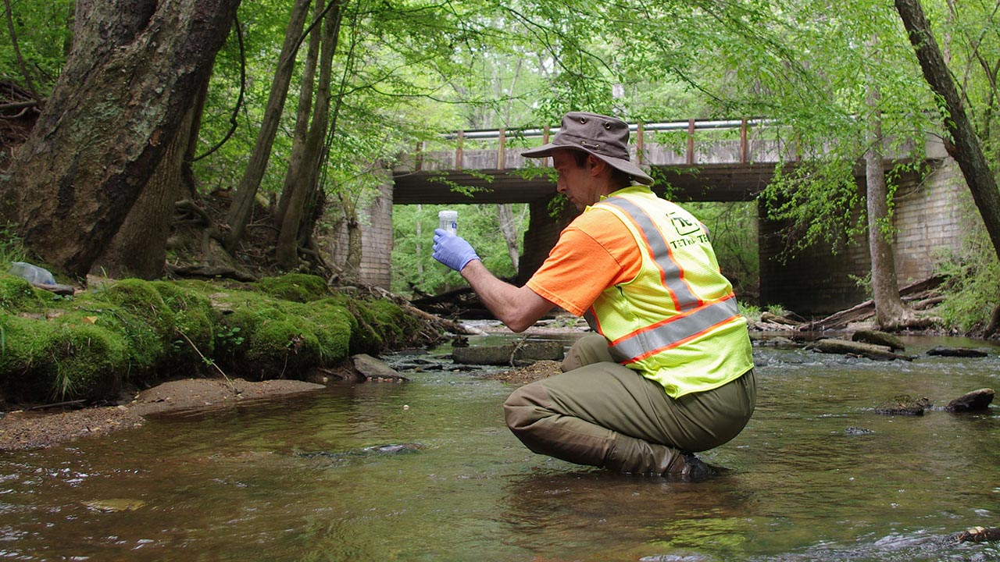
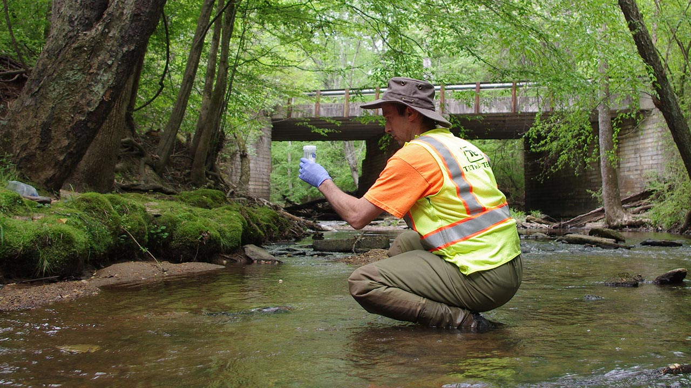

Pennsylvania is host to countless species of wildlife that depend on varying habitats within its borders. From old‐growth forest remnants in the northern part of the state and the hardwood ridges of the Appalachian to the restored wetlands and coldwater streams, the Commonwealth supports an extraordinary range of ecological communities. Yet, the diversity Pennsylvanians see today is the product of both rich natural heritage and more than a century of conservation work that followed a period of intense resource extraction and widespread wildlife decline. Understanding how these landscapes were shaped — and how state agencies like the Pennsylvania Game Commission, Department of Conservation and Natural Resources, and Fish & Boat Commission now work to protect them is essential to appreciating the ongoing effort to conserve the state’s wildlife for future generations.


Pennsylvania’s conservation story begins with a long period of intensive extraction. From initial European settlement through the 19th century, forests were cleared for farms, timber, mining and fuel, and abundant wildlife was dramatically reduced by unregulated harvest and habitat loss. By the late 1800s Pennsylvania’s once-extensive old-growth forests had been reduced to a fraction of their original extent and large predators and many game species had been extirpated in places; industrial-era mining and early manufacturing also left rivers and streams badly degraded. These historical losses soil erosion, wildfires on cutover lands, and polluted waterways set the stage for the conservation and restoration movements that followed.
 

That difficult legacy prompted early reformers and the first institutional responses in Pennsylvania. Naturalists and foresters such as Joseph Rothrock and others pushed for protection of watersheds and forest reserves; Pennsylvania created its first state forest system and early forestry institutions in reaction to the deforestation and resource depletion of the 19th century. Over the 20th century, growing public support for parks, forest management, and wildlife protection shifted Pennsylvania toward a mixed economy in which natural resource management and restoration became central public goals.
Today the Department of Conservation and Natural Resources (DCNR) frames its work around a clear stewardship mission: “to conserve and sustain Pennsylvania’s natural resources for present and future generations’ use and enjoyment.” DCNR manages the state park and forest systems, runs education programs, and implements habitat and stream-restoration projects (for example, brook trout and riparian work) that emphasize both recreation and long-term ecological health. The department’s tone is centered on science-based stewardship, outdoor access, and public education.


The Pennsylvania Game Commission (PGC) is the state’s wildlife management agency charged with “managing and protecting wildlife and their habitats while promoting hunting and trapping for current and future generations.” The PGC manages more than 1.5 million acres of State Game Lands and applies active habitat management to produce the habitat types many species require, while using tools such as the Pennsylvania Wildlife Action Plan and State Wildlife Grants to prioritize Species of Greatest Conservation Need and on-the-ground research. Recent, high-profile initiatives include the Pennsylvania Wetland Habitat Initiative and ongoing habitat and research projects across State Game Lands.

The Pennsylvania Fish & Boat Commission (PFBC) complements terrestrial conservation by protecting and enhancing the Commonwealth’s aquatic resources and ensuring public access for fishing and boating. Rooted in laws dating to the 19th and early 20th centuries, PFBC’s programs now emphasize hatchery operations, stream and lake habitat improvement, dam removal and restoration, and grant programs such as the Coldwater Heritage Partnership that fund local coldwater stream conservation. The PFBC adopts a mix of resource protection and public-service language — protecting aquatic species while supporting angling and safe boating access.


The Pennsylvania Department of Environmental Protection (DEP) brings the pollution-control and remediation side of conservation into play: its core mission is to protect the Commonwealth’s air, land and water from pollution. DEP administers watershed restoration programs, hazardous sites cleanup, and regulatory programs that target legacy problems (abandoned mine drainage, contaminated industrial sites, and impaired waters) and emerging threats; its integrated water quality reporting and remediation programs are central to returning rivers and streams to healthier ecological function.

 

| Name: | Role: | Email: |
|---|---|---|
| Kara Scotti | Website Design | ScottKM22@juniata.edu |
| Joey Walsh | Website Programing | WalshJE22@juniata.edu |